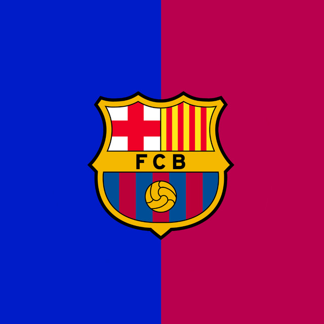

|
 FC BARCELONA"Més que un club" (Lebih dari sekadar klub) |
|
| FCB: | Sejarah | Prestasi | Pemain Bintang | Kontak Fans | |
INFOProfil Singkat:
LINK: |
Profil & Sejarah FC BarcelonaFutbol Club Barcelona, dikenal sebagai FC Barcelona atau Barça, adalah klub sepak bola profesional yang berbasis di Barcelona, Katalonia, Spanyol. Didirikan pada tahun 1899 oleh sekelompok pesepak bola Swiss, Inggris, dan Katalan yang dipimpin oleh Joan Gamper. Klub ini telah menjadi simbol budaya Katalan dan Katalanisme, yang terukir dalam slogan "Més que un club". Prestasi Utama KlubBerikut adalah beberapa pencapaian trofi utama yang berhasil diraih oleh FC Barcelona:
Legenda & Pemain PentingBeberapa pemain legendaris yang pernah membela FC Barcelona antara lain:
|
|
FC Barcelona Fans |
|